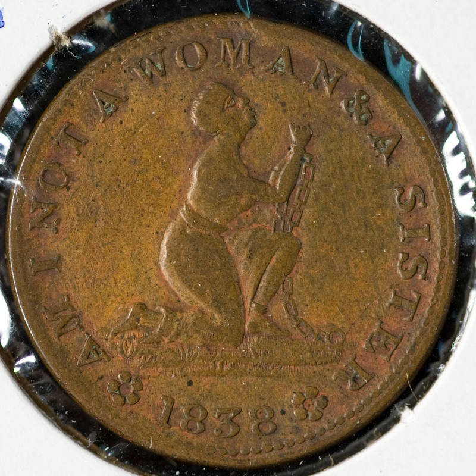
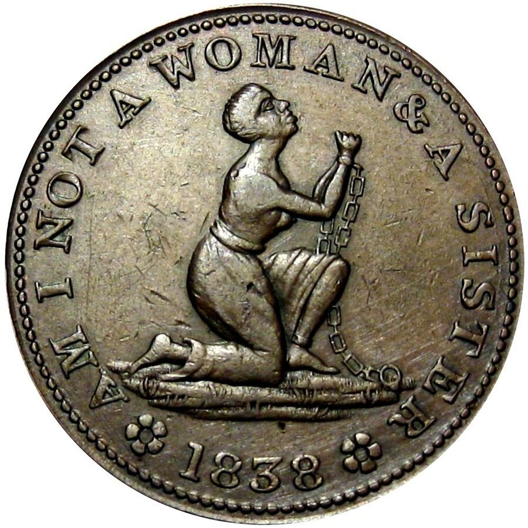

| Field | Detail |
| TOC Fit | Chapter 12 · Essay prompt 12.3 (Who Drove Abolitionism?); Essay prompt 12.4 (Abolition and Women's Rights) |
| Why Here | A penny-sized copper token carried the kneeling enslaved woman and her plea into everyday pocket change during the hard times after the Panic of 1837. Students can use it as evidence of how abolitionists used cheap mass-produced objects, and an image aimed at women’s sympathy, to reach ordinary people. |
| Treatment | Public-domain object (image); inscriptions transcribed |
After the Panic of 1837 banks suspended payment in specie, and small coins nearly disappeared from circulation. Private makers struck millions of copper “Hard Times tokens,” about the size of a large cent, which passed as small change. Many carried political messages, especially attacks on Andrew Jackson, Martin Van Buren, and the Bank War. Abolitionists used the same medium. This 1838 token shows a kneeling, chained enslaved woman with the motto “Am I Not a Woman & a Sister,” the female version of the British antislavery emblem that American women’s antislavery societies had adopted. Its reverse copies the wording of a federal coin, “United States of America, Liberty, 1838,” setting the promise of liberty beside the image of a woman in chains. The token is usually attributed to the New York firm of Gibbs, Gardner & Co.; the Chrysler Museum also credits the American Anti-Slavery Society. Editorial note. The object is recorded for image capture from the Chrysler Museum of Art (object number 39.6.97F); the museum page gives the maker, date, medium, size, and inscriptions transcribed here, but it states no rights or reuse terms for its photograph. The 1838 token itself is in the public domain. If the Chrysler photograph cannot be used, Wikimedia Commons has photographs of another example of the same token type (HT-81, Low 54) marked public domain, listed as a second image record; that copy’s provenance is a commercial sale listing. The slash marks in the reverse inscription show line breaks on the token. CAUTION: The token is propaganda in object form; its maker and distributors intended it to persuade, and it shows an emblem rather than a real person. |
|
 |
|
 |
|
UNIT 3 · AN EXPANDING NATION | HISTORY B17A | DANIEL GARZA, M.A.
|
_Stevehayden_01.jpg){kind=link}